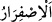
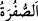
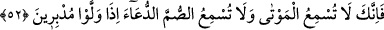

muhakkak nankörlüğe başlarlar.
“Andolsun ki, bir rüzgâr” batı rüzgarı ve benzeri bir azab rüzgarı “göndersek de onu
(ekini)” Allâh’ın rahmetinin eserleri olan bitkileri “sararmış görseler,” yâni Allâh’a
yemin olsun ki zararlı sıcak veya soğuk bir rüzgar göndersek de kâfirlerin ekinini ifsâd
etse, onlar da onu rüzgarın tesiriyle sararmış, yâni yeşilliğinden sonra sararmış ve
kuruyup yok olmaya yaklaşmış görseler “ardından” yâni ekinin ve bitkilerin
sararmasından sonra “muhakkak” durmadan ve tehir etmeden “nankörlüğe başlarlar.”
“
” sararmak demektir. “
(sarı)” siyah ile beyaz arasında, beyaza yakın
renklerden bir renktir.
Yâni kâfirlerin Rablerine îtimâdı yoktur. Eğer onlara iyilik ve bolluk isâbet ederse
Allâh’a şükretmez, O’na itâat etmez ve sevinmekte aşırıya kaçarlar. Eğer
hoşlanmadıkları en küçük bir şey başlarına gelse, sızlanıp şikâyet ederler, sabretmezler,
önceden verilen nîmetleri inkâr ederler ve istiğfar ile Allâh’a ilticâ etmezler. Mü’minin
hâli ise böyle değildir. Çünkü o, nîmet olduğunda şükreder, mihnet olduğunda ise
sabreder, Allâh’ın rahmetinden ümit kesmez. Rahmeti celbetmek için gece gündüz tâat
ve istiğfâr ile Allâh’a ilticâ eder.
Mesnevî’de der ki:
Def edilmesi mümkün olmayan belâ inince,
Yalvarıp yakarma ona şefaatçi olmaz
Bu huzurda tevâzudan, kulluktan ve
Düşkünlükten başka bir şeyin itibarı yoktur.
Üzüntü görünce istiğfar et; çünkü üzüntü,
Yaratıcının emriyle etkin olur
Âyette işâret vardır ki ezelî şakâvet rüzgârı kahır ve izzet cihetinden şakîlerin
muâmelâtının üzerine estiği zaman, o yeşil, yâni şerîata uygun bile olsa onları münâfığın
amelleri gibi sararmış ve rüzgarın savurduğu kuru bir hale getirir. Onlar nifak ile olan
taklîdî îmandan sonra Allâh’ı ve nîmetini inkâr ederler. Bu inkâr sadece nîmet ile ilgili
olan inkârdan daha çirkindir. Şakavetin gelip çatmasından, kötü halden, kötü sözlerden
ve fiillerden Allâh’a sığınırız.
52. (Rasûlüm!) Elbette sen ölülere duyuramazsın; arkalarını dönüp giderlerken
sağırlara o dâveti işittiremezsin.
“(Rasûlüm!) Elbette sen ölülere” yâni anlattığımız gibi kâfirlerden olanlara
“duyuramazsın;” onun için ey Muhammed, onların senin sözünü anlamalarını ve